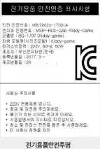
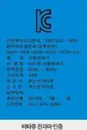
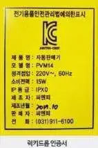
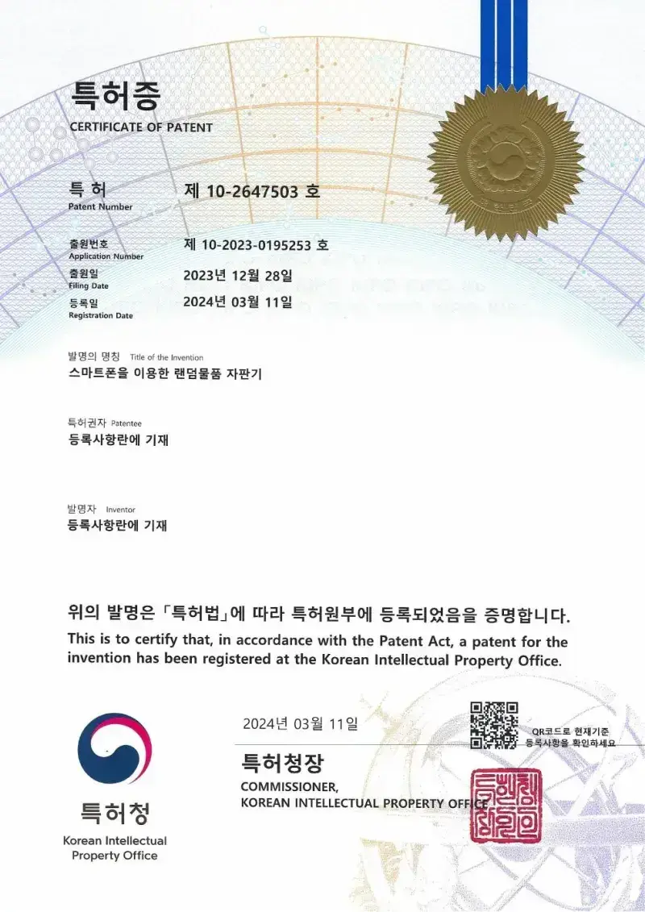
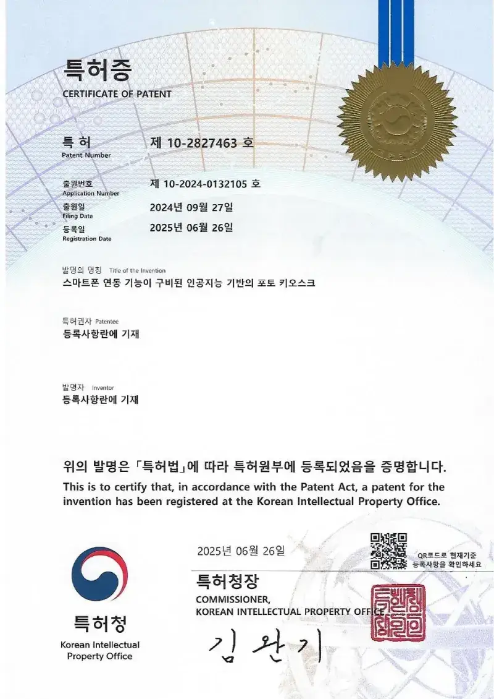
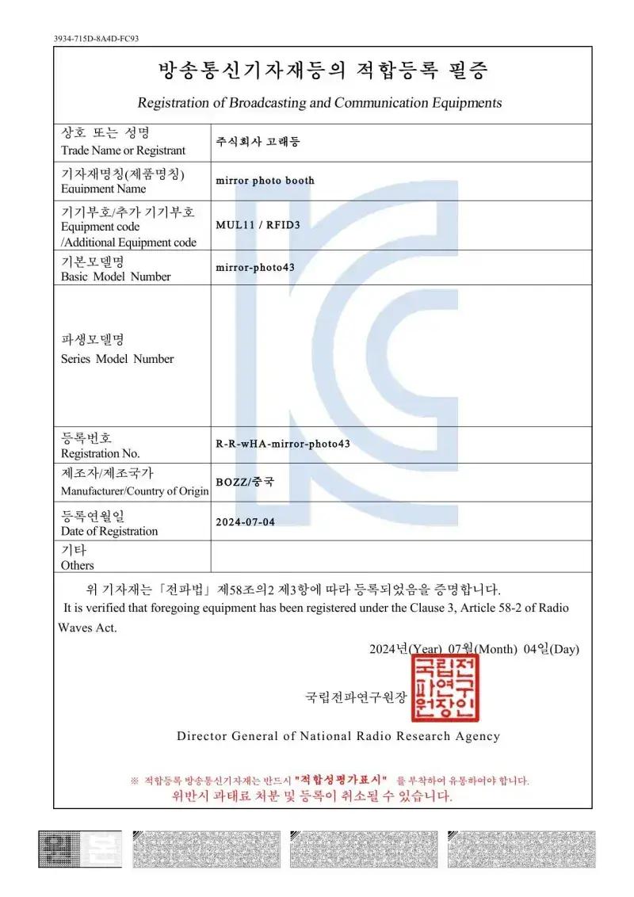
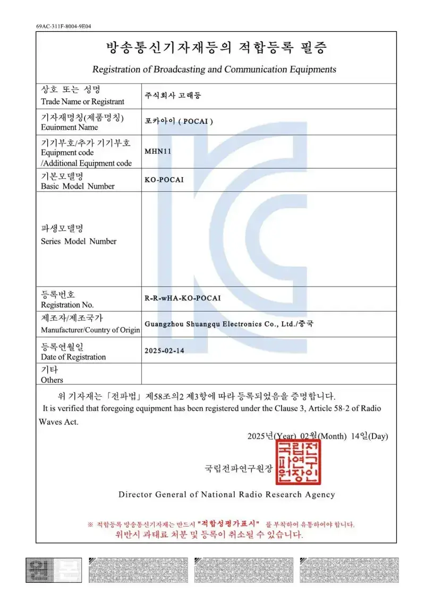
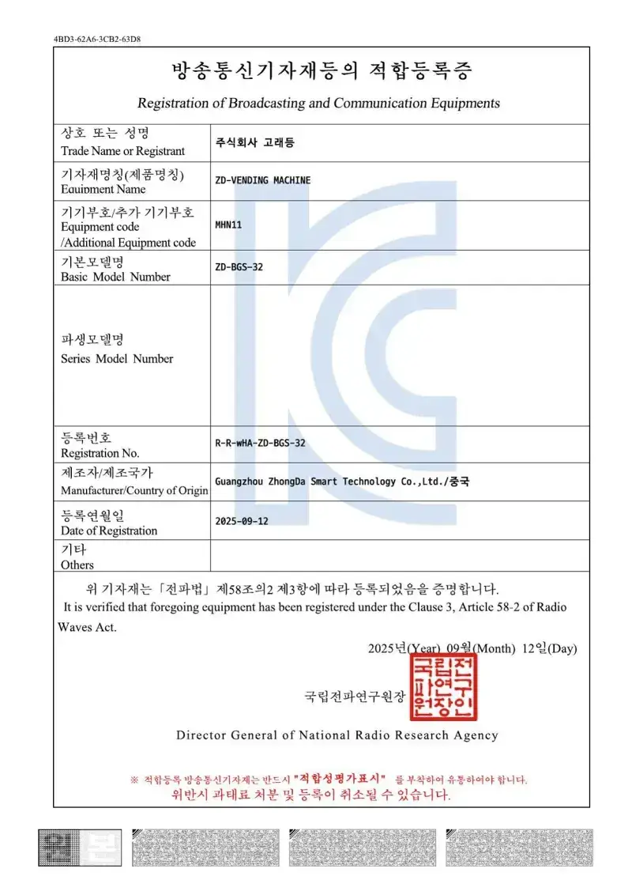
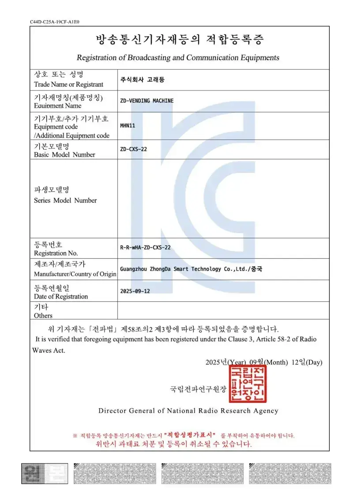

내려받는 자료
자료실
배치 도면, 설치 전 체크리스트, 제품안내서, 인증서를 내려받으세요. 파일 형식과 용량을 버튼에 적었습니다.

제품안내서
전 기종 제원을 담은 제품 안내서입니다. 기종별 안내서는 제품 상세에서도 내려받을 수 있습니다.
- MAXDAY 장비 전제품 안내서회사 소개와 인형뽑기·게임기·자판기·포토·운세·키디라이드 전 기종 제원 (120쪽) 내려받기
기종별 안내서 161개 보기
- 블링팝 제품 안내서MAXDAY 장비 전제품 안내서 8쪽 (제원·특징) 내려받기
- 뉴미니부띠끄3 제품 안내서MAXDAY 장비 전제품 안내서 8쪽 (제원·특징) 내려받기
- 핑크러브 제품 안내서MAXDAY 장비 전제품 안내서 9쪽 (제원·특징) 내려받기
- 블링팝(4인용) 제품 안내서MAXDAY 장비 전제품 안내서 9쪽 (제원·특징) 내려받기
- 아이조아6P 제품 안내서MAXDAY 장비 전제품 안내서 10쪽 (제원·특징) 내려받기
- 스페이스X 제품 안내서MAXDAY 장비 전제품 안내서 11쪽 (제원·특징) 내려받기
- 미니알파부띠끄 제품 안내서MAXDAY 장비 전제품 안내서 12쪽 (제원·특징) 내려받기
- 미니부띠끄 제품 안내서MAXDAY 장비 전제품 안내서 12쪽 (제원·특징) 내려받기
- 빙빙(BING BING) 제품 안내서MAXDAY 장비 전제품 안내서 13쪽 (제원·특징) 내려받기
- 뉴미니미니 제품 안내서MAXDAY 장비 전제품 안내서 13쪽 (제원·특징) 내려받기
- 미니골드(MINI GOLD) 제품 안내서MAXDAY 장비 전제품 안내서 14쪽 (제원·특징) 내려받기
- 럭키 뉴 미니미니 제품 안내서MAXDAY 장비 전제품 안내서 14쪽 (제원·특징) 내려받기
- 볼파라다이스 제품 안내서MAXDAY 장비 전제품 안내서 15쪽 (제원·특징) 내려받기
- KOSING 제품 안내서MAXDAY 장비 전제품 안내서 15쪽 (제원·특징) 내려받기
- 리틀팡팡 제품 안내서MAXDAY 장비 전제품 안내서 16쪽 (제원·특징) 내려받기
- 미니티 제품 안내서MAXDAY 장비 전제품 안내서 16쪽 (제원·특징) 내려받기
- 리틀팡팡 7 제품 안내서MAXDAY 장비 전제품 안내서 17쪽 (제원·특징) 내려받기
- 리틀팡팡 6 제품 안내서MAXDAY 장비 전제품 안내서 17쪽 (제원·특징) 내려받기
- 미니미 제품 안내서MAXDAY 장비 전제품 안내서 18쪽 (제원·특징) 내려받기
- 미니프랜즈 제품 안내서MAXDAY 장비 전제품 안내서 18쪽 (제원·특징) 내려받기
- 포포베 인형뽑기 제품 안내서MAXDAY 장비 전제품 안내서 19쪽 (제원·특징) 내려받기
- 요요파티 제품 안내서MAXDAY 장비 전제품 안내서 19쪽 (제원·특징) 내려받기
- 왕발 인형뽑기 제품 안내서MAXDAY 장비 전제품 안내서 20쪽 (제원·특징) 내려받기
- 밀판 마켓 크래프트2 제품 안내서MAXDAY 장비 전제품 안내서 20쪽 (제원·특징) 내려받기
- 슈퍼스타 제품 안내서MAXDAY 장비 전제품 안내서 21쪽 (제원·특징) 내려받기
- 트윈 크래프트(2인용밀판) 제품 안내서MAXDAY 장비 전제품 안내서 21쪽 (제원·특징) 내려받기
- 벅스봇 캐쳐 제품 안내서MAXDAY 장비 전제품 안내서 22쪽 (제원·특징) 내려받기
- 골든박스 제품 안내서MAXDAY 장비 전제품 안내서 22쪽 (제원·특징) 내려받기
- 슈퍼볼 제품 안내서MAXDAY 장비 전제품 안내서 23쪽 (제원·특징) 내려받기
- 윷놀이 제품 안내서MAXDAY 장비 전제품 안내서 23쪽 (제원·특징) 내려받기
- 해피컷 제품 안내서MAXDAY 장비 전제품 안내서 24쪽 (제원·특징) 내려받기
- 스톱워치게임기 - 초를 잡아라! 제품 안내서MAXDAY 장비 전제품 안내서 26쪽 (제원·특징) 내려받기
- 순발력 테스트 봉잡기 제품 안내서MAXDAY 장비 전제품 안내서 26쪽 (제원·특징) 내려받기
- 청기 홍기 백기 제품 안내서MAXDAY 장비 전제품 안내서 27쪽 (제원·특징) 내려받기
- 야구왕(홈런왕) 제품 안내서MAXDAY 장비 전제품 안내서 27쪽 (제원·특징) 내려받기
- 애니멀 카이저 제품 안내서MAXDAY 장비 전제품 안내서 28쪽 (제원·특징) 내려받기
- 스피드 터치 제품 안내서MAXDAY 장비 전제품 안내서 28쪽 (제원·특징) 내려받기
- 테이블사커 제품 안내서MAXDAY 장비 전제품 안내서 29쪽 (제원·특징) 내려받기
- 해피 리틀 풋볼(어린이 손축구게임기) 제품 안내서MAXDAY 장비 전제품 안내서 29쪽 (제원·특징) 내려받기
- 발펀치(페널티슛) 제품 안내서MAXDAY 장비 전제품 안내서 30쪽 (제원·특징) 내려받기
- 슈팅찬스 - 발펀치 제품 안내서MAXDAY 장비 전제품 안내서 30쪽 (제원·특징) 내려받기
- 해피사커3 제품 안내서MAXDAY 장비 전제품 안내서 31쪽 (제원·특징) 내려받기
- 발펀치 제품 안내서MAXDAY 장비 전제품 안내서 31쪽 (제원·특징) 내려받기
- NEW 슈퍼루키 - 농구게임 제품 안내서MAXDAY 장비 전제품 안내서 32쪽 (제원·특징) 내려받기
- 슈퍼루키 - 농구게임 제품 안내서MAXDAY 장비 전제품 안내서 32쪽 (제원·특징) 내려받기
- 어린이 농구 게임(중) 제품 안내서MAXDAY 장비 전제품 안내서 33쪽 (제원·특징) 내려받기
- 해피베이비(어린이 손농구 게임기) 제품 안내서MAXDAY 장비 전제품 안내서 33쪽 (제원·특징) 내려받기
- 미니 에어하키 (아동용) 제품 안내서MAXDAY 장비 전제품 안내서 34쪽 (제원·특징) 내려받기
- 스피드 하키 2 제품 안내서MAXDAY 장비 전제품 안내서 34쪽 (제원·특징) 내려받기
- 해적배틀(퍼니팡팡) 제품 안내서MAXDAY 장비 전제품 안내서 35쪽 (제원·특징) 내려받기
- 럭키볼 제품 안내서MAXDAY 장비 전제품 안내서 35쪽 (제원·특징) 내려받기
- 하키고2 제품 안내서MAXDAY 장비 전제품 안내서 36쪽 (제원·특징) 내려받기
- 슈퍼하키 제품 안내서MAXDAY 장비 전제품 안내서 36쪽 (제원·특징) 내려받기
- 낚시게임 - 6인용 제품 안내서MAXDAY 장비 전제품 안내서 37쪽 (제원·특징) 내려받기
- 2인용 낚시 제품 안내서MAXDAY 장비 전제품 안내서 37쪽 (제원·특징) 내려받기
- 애벌레 키우기 제품 안내서MAXDAY 장비 전제품 안내서 38쪽 (제원·특징) 내려받기
- TOP WORLD 에어하키 제품 안내서MAXDAY 장비 전제품 안내서 38쪽 (제원·특징) 내려받기
- 해피롱(4칸) 자판기 제품 안내서MAXDAY 장비 전제품 안내서 40쪽 (제원·특징) 내려받기
- 해피롱 자판기 제품 안내서MAXDAY 장비 전제품 안내서 41쪽 (제원·특징) 내려받기
- 롤리팝 자판기 제품 안내서MAXDAY 장비 전제품 안내서 42쪽 (제원·특징) 내려받기
- 슈퍼가차 자판기 제품 안내서MAXDAY 장비 전제품 안내서 42쪽 (제원·특징) 내려받기
- 프라임에그 (Prime Egg) 제품 안내서MAXDAY 장비 전제품 안내서 43쪽 (제원·특징) 내려받기
- 왕멘토스 자판기 제품 안내서MAXDAY 장비 전제품 안내서 44쪽 (제원·특징) 내려받기
- 사이언스볼 제품 안내서MAXDAY 장비 전제품 안내서 44쪽 (제원·특징) 내려받기
- 탱탱볼자판기(퍼플) 제품 안내서MAXDAY 장비 전제품 안내서 45쪽 (제원·특징) 내려받기
- 탱탱볼 자판기(노랑) 제품 안내서MAXDAY 장비 전제품 안내서 45쪽 (제원·특징) 내려받기
- 멘토스 자판기 제품 안내서MAXDAY 장비 전제품 안내서 46쪽 (제원·특징) 내려받기
- 츄파춥스 자판기 제품 안내서MAXDAY 장비 전제품 안내서 46쪽 (제원·특징) 내려받기
- 불빛공 좋은친구들 제품 안내서MAXDAY 장비 전제품 안내서 47쪽 (제원·특징) 내려받기
- 불빛공 덩크슛 달인 제품 안내서MAXDAY 장비 전제품 안내서 47쪽 (제원·특징) 내려받기
- 수제사탕 자판기(구) 제품 안내서MAXDAY 장비 전제품 안내서 48쪽 (제원·특징) 내려받기
- 수제사탕 자판기(신) 제품 안내서MAXDAY 장비 전제품 안내서 48쪽 (제원·특징) 내려받기
- 럭키드롭킹 제품 안내서MAXDAY 장비 전제품 안내서 49쪽 (제원·특징) 내려받기
- 럭키드롭 제품 안내서MAXDAY 장비 전제품 안내서 49쪽 (제원·특징) 내려받기
- 헬륨풍선 자판기(대형) 제품 안내서MAXDAY 장비 전제품 안내서 51쪽 (제원·특징) 내려받기
- 헬륨풍선 자판기(소형) 제품 안내서MAXDAY 장비 전제품 안내서 51쪽 (제원·특징) 내려받기
- 3단 캡슐자판기 제품 안내서MAXDAY 장비 전제품 안내서 52쪽 (제원·특징) 내려받기
- 2단 캡슐자판기 제품 안내서MAXDAY 장비 전제품 안내서 52쪽 (제원·특징) 내려받기
- 선물창(5단10칸) 제품 안내서MAXDAY 장비 전제품 안내서 53쪽 (제원·특징) 내려받기
- 2단 캡슐자판기(백색) 제품 안내서MAXDAY 장비 전제품 안내서 53쪽 (제원·특징) 내려받기
- 키디팡팡 제품 안내서MAXDAY 장비 전제품 안내서 54쪽 (제원·특징) 내려받기
- 샵앤샵 제품 안내서MAXDAY 장비 전제품 안내서 55쪽 (제원·특징) 내려받기
- 타로운세자판기(소형) 제품 안내서MAXDAY 장비 전제품 안내서 56쪽 (제원·특징) 내려받기
- 타로운세자판기(대형) 제품 안내서MAXDAY 장비 전제품 안내서 56쪽 (제원·특징) 내려받기
- 렌덤자판기(토네이도형) 제품 안내서MAXDAY 장비 전제품 안내서 57쪽 (제원·특징) 내려받기
- 랜덤자판기(스프링형) 제품 안내서MAXDAY 장비 전제품 안내서 58쪽 (제원·특징) 내려받기
- 지폐교환기 제품 안내서MAXDAY 장비 전제품 안내서 59쪽 (제원·특징) 내려받기
- 동전교환기 제품 안내서MAXDAY 장비 전제품 안내서 59쪽 (제원·특징) 내려받기
- 화폐교환기(동전 지폐 겸용) 제품 안내서MAXDAY 장비 전제품 안내서 60쪽 (제원·특징) 내려받기
- 포토위드(부스형) 제품 안내서MAXDAY 장비 전제품 안내서 63쪽 (제원·특징) 내려받기
- 방수네임스티커 제품 안내서MAXDAY 장비 전제품 안내서 64쪽 (제원·특징) 내려받기
- 로또손금 운세자판기 제품 안내서MAXDAY 장비 전제품 안내서 65쪽 (제원·특징) 내려받기
- 23 LCD 오락기(대) 제품 안내서MAXDAY 장비 전제품 안내서 68쪽 (제원·특징) 내려받기
- 23 LCD 오락기(소) 제품 안내서MAXDAY 장비 전제품 안내서 68쪽 (제원·특징) 내려받기
- 32인치 LCD 오락기 제품 안내서MAXDAY 장비 전제품 안내서 69쪽 (제원·특징) 내려받기
- 미니오락기 제품 안내서MAXDAY 장비 전제품 안내서 69쪽 (제원·특징) 내려받기
- (아동용) ALIENS 미니슈팅게임 제품 안내서MAXDAY 장비 전제품 안내서 71쪽 (제원·특징) 내려받기
- 렛츠고 정글 (아동용) 제품 안내서MAXDAY 장비 전제품 안내서 71쪽 (제원·특징) 내려받기
- 타임 크라이시스 2 제품 안내서MAXDAY 장비 전제품 안내서 72쪽 (제원·특징) 내려받기
- 총 쏘기 게임 (아동용) 제품 안내서MAXDAY 장비 전제품 안내서 72쪽 (제원·특징) 내려받기
- 타임 크라이시스4 제품 안내서MAXDAY 장비 전제품 안내서 73쪽 (제원·특징) 내려받기
- 타임 크라이시스 3 제품 안내서MAXDAY 장비 전제품 안내서 73쪽 (제원·특징) 내려받기
- 건블레이드 제품 안내서MAXDAY 장비 전제품 안내서 74쪽 (제원·특징) 내려받기
- 라이징스톰 제품 안내서MAXDAY 장비 전제품 안내서 74쪽 (제원·특징) 내려받기
- (아동용) 레츠고 아일랜드3D 제품 안내서MAXDAY 장비 전제품 안내서 75쪽 (제원·특징) 내려받기
- 레츠고 정글 제품 안내서MAXDAY 장비 전제품 안내서 75쪽 (제원·특징) 내려받기
- 트랜스포머 제품 안내서MAXDAY 장비 전제품 안내서 76쪽 (제원·특징) 내려받기
- 트랜스포머SD 제품 안내서MAXDAY 장비 전제품 안내서 76쪽 (제원·특징) 내려받기
- 매지칸 물총2 제품 안내서MAXDAY 장비 전제품 안내서 77쪽 (제원·특징) 내려받기
- 매지칸 물총 제품 안내서MAXDAY 장비 전제품 안내서 77쪽 (제원·특징) 내려받기
- 몬스터 슈팅(탁구공) 제품 안내서MAXDAY 장비 전제품 안내서 78쪽 (제원·특징) 내려받기
- 몬스터 슈팅(물총) 제품 안내서MAXDAY 장비 전제품 안내서 78쪽 (제원·특징) 내려받기
- 데드스톰스페셜DX 제품 안내서MAXDAY 장비 전제품 안내서 79쪽 (제원·특징) 내려받기
- 렛츠고 아일랜드 제품 안내서MAXDAY 장비 전제품 안내서 79쪽 (제원·특징) 내려받기
- 다크이스케이프4D 제품 안내서MAXDAY 장비 전제품 안내서 80쪽 (제원·특징) 내려받기
- 이니셜D8 제품 안내서MAXDAY 장비 전제품 안내서 82쪽 (제원·특징) 내려받기
- 마리오카트DX 제품 안내서MAXDAY 장비 전제품 안내서 82쪽 (제원·특징) 내려받기
- (아동용) 스피드 맥스 제품 안내서MAXDAY 장비 전제품 안내서 83쪽 (제원·특징) 내려받기
- 미니 자동차 게임 (아동용) 제품 안내서MAXDAY 장비 전제품 안내서 83쪽 (제원·특징) 내려받기
- (어린이용) 소닉 레이싱 제품 안내서MAXDAY 장비 전제품 안내서 84쪽 (제원·특징) 내려받기
- OutRun (어린이용) 제품 안내서MAXDAY 장비 전제품 안내서 84쪽 (제원·특징) 내려받기
- 어린이 소닉 자동차경주게임기 제품 안내서MAXDAY 장비 전제품 안내서 85쪽 (제원·특징) 내려받기
- OutRun 2 (2인용) 제품 안내서MAXDAY 장비 전제품 안내서 86쪽 (제원·특징) 내려받기
- OutRun 2SP(2인용) 제품 안내서MAXDAY 장비 전제품 안내서 86쪽 (제원·특징) 내려받기
- 할리데이비슨 핀볼 제품 안내서MAXDAY 장비 전제품 안내서 88쪽 (제원·특징) 내려받기
- 핀볼 제품 안내서MAXDAY 장비 전제품 안내서 88쪽 (제원·특징) 내려받기
- 고릴라 전자다트pop 제품 안내서MAXDAY 장비 전제품 안내서 89쪽 (제원·특징) 내려받기
- 스타라이트 다트 제품 안내서MAXDAY 장비 전제품 안내서 89쪽 (제원·특징) 내려받기
- 불스아이 전자다트 제품 안내서MAXDAY 장비 전제품 안내서 90쪽 (제원·특징) 내려받기
- 룰렛 제품 안내서MAXDAY 장비 전제품 안내서 91쪽 (제원·특징) 내려받기
- 자석다트 제품 안내서MAXDAY 장비 전제품 안내서 91쪽 (제원·특징) 내려받기
- 킹오브더해머 제품 안내서MAXDAY 장비 전제품 안내서 93쪽 (제원·특징) 내려받기
- 썬더SD 제품 안내서MAXDAY 장비 전제품 안내서 93쪽 (제원·특징) 내려받기
- 데스페라도 - 손펀치 제품 안내서MAXDAY 장비 전제품 안내서 94쪽 (제원·특징) 내려받기
- 걸 파이터 제품 안내서MAXDAY 장비 전제품 안내서 94쪽 (제원·특징) 내려받기
- 발펀치(슈팅 찬스) 제품 안내서MAXDAY 장비 전제품 안내서 95쪽 (제원·특징) 내려받기
- 드래곤펀치 제품 안내서MAXDAY 장비 전제품 안내서 96쪽 (제원·특징) 내려받기
- 미니두더지(아동용) 제품 안내서MAXDAY 장비 전제품 안내서 97쪽 (제원·특징) 내려받기
- 요요펀치 제품 안내서MAXDAY 장비 전제품 안내서 97쪽 (제원·특징) 내려받기
- NEW 정글 헌터 제품 안내서MAXDAY 장비 전제품 안내서 98쪽 (제원·특징) 내려받기
- 정글헌터 제품 안내서MAXDAY 장비 전제품 안내서 98쪽 (제원·특징) 내려받기
- 오더 업 제품 안내서MAXDAY 장비 전제품 안내서 99쪽 (제원·특징) 내려받기
- 왕두더지 팡팡 제품 안내서MAXDAY 장비 전제품 안내서 99쪽 (제원·특징) 내려받기
- 스피드 펀치 제품 안내서MAXDAY 장비 전제품 안내서 100쪽 (제원·특징) 내려받기
- 노래하는 두더지 제품 안내서MAXDAY 장비 전제품 안내서 100쪽 (제원·특징) 내려받기
- 스크린두더지 (천방지축) 제품 안내서MAXDAY 장비 전제품 안내서 101쪽 (제원·특징) 내려받기
- 두더지(마시마로) 제품 안내서MAXDAY 장비 전제품 안내서 101쪽 (제원·특징) 내려받기
- 비시바시챔프 제품 안내서MAXDAY 장비 전제품 안내서 102쪽 (제원·특징) 내려받기
- 더 비시바시 제품 안내서MAXDAY 장비 전제품 안내서 102쪽 (제원·특징) 내려받기
- 손펌프 비트온 제품 안내서MAXDAY 장비 전제품 안내서 104쪽 (제원·특징) 내려받기
- 펌프LX프라임2 (DDR) 제품 안내서MAXDAY 장비 전제품 안내서 104쪽 (제원·특징) 내려받기
- 유비트 제품 안내서MAXDAY 장비 전제품 안내서 105쪽 (제원·특징) 내려받기
- 펌프 제품 안내서MAXDAY 장비 전제품 안내서 105쪽 (제원·특징) 내려받기
- 태고의 달인 제품 안내서MAXDAY 장비 전제품 안내서 106쪽 (제원·특징) 내려받기
- EZ2DJ 제품 안내서MAXDAY 장비 전제품 안내서 106쪽 (제원·특징) 내려받기
- 정글 드러머(JUNGLE DRUMMER) 제품 안내서MAXDAY 장비 전제품 안내서 107쪽 (제원·특징) 내려받기
- 엣지플레이 제품 안내서MAXDAY 장비 전제품 안내서 107쪽 (제원·특징) 내려받기
- 상어가족 라이드 제품 안내서MAXDAY 장비 전제품 안내서 109쪽 (제원·특징) 내려받기
- 프리미엄 라이드 제품 안내서MAXDAY 장비 전제품 안내서 112쪽 (제원·특징) 내려받기
- 바다회전목마 제품 안내서MAXDAY 장비 전제품 안내서 113쪽 (제원·특징) 내려받기
- 회전목마 제품 안내서MAXDAY 장비 전제품 안내서 114쪽 (제원·특징) 내려받기
인증서
상표·디자인 등록과 전기용품 안전인증(KC) 등 MAXDAY 장비가 받은 인증과 등록 서류입니다.
- 상표등록증특허청원본 내려받기 · PNG
- 디자인등록증특허청원본 내려받기 · PNG
- 방송통신기자재등의 적합등록 필증국립전파연구원원본 내려받기 · PNG
- 안전확인신고 증명서 (KTC)한국기계전기전자시험연구원(KTC)원본 내려받기 · PNG
- 안전확인신고 증명서 (KTR)한국화학융합시험연구원(KTR)원본 내려받기 · PNG
- 통신판매업신고증부산광역시 기장군수원본 내려받기 · PNG

전기용품 안전인증 표시 (Kiddy-game)MAXDAY 장비 전제품 안내서 4쪽 인증 표시원본 내려받기 · PNG- 전기용품 안전인증 표시 (동전교환기 Kiddy-coin)번호 YB07010-17001원본 내려받기 · PNG

전자파 적합 인증 표시 (비타쥬 자동판매기)MAXDAY 장비 전제품 안내서 4쪽 인증 표시원본 내려받기 · PNG
전기용품 안전관리법 표시 (럭키드롭)MAXDAY 장비 전제품 안내서 4쪽 인증 표시원본 내려받기 · PNG- 특허 제10-2773424호 · 온라인 기반의 랜덤물품 제공 시스템제조사(주식회사 고래등) 서류등록일 2025.02.21 · 출원번호 제10-2023-0195241호원본 내려받기 · JPG

특허 제10-2647503호 · 스마트폰을 이용한 랜덤물품 자판기제조사(주식회사 고래등) 서류등록일 2024.03.11 · 출원번호 제10-2023-0195253호원본 내려받기 · JPG
특허 제10-2827463호 · 스마트폰 연동 기능이 구비된 AI 기반 포토 키오스크제조사(주식회사 고래등) 서류등록일 2025.06.26 · 출원번호 제10-2024-0132105호원본 내려받기 · JPG- 특허 제10-2921097호 · 광고재생과 순간촬영의 기능이 구비된 포토 키오스크제조사(주식회사 고래등) 서류등록일 2026.01.28 · 출원번호 제10-2024-0132118호원본 내려받기 · JPG

방송통신기자재 적합등록 · Mirror Photo Booth제조사(주식회사 고래등) 서류등록번호 R-R-wHA-mirror-photo43 · 등록일 2024.07.04원본 내려받기 · JPG
방송통신기자재 적합등록 · 포카아이 (POCAI) KO-POCAI제조사(주식회사 고래등) 서류등록번호 R-R-wHA-KO-POCAI · 등록일 2025.02.14원본 내려받기 · JPG
방송통신기자재 적합등록 · ZD-VENDING MACHINE ZD-BGS-32제조사(주식회사 고래등) 서류등록번호 R-R-wHA-ZD-BGS-32 · 등록일 2025.09.12원본 내려받기 · JPG
방송통신기자재 적합등록 · ZD-VENDING MACHINE ZD-CXS-22제조사(주식회사 고래등) 서류등록번호 R-R-wHA-ZD-CXS-22 · 등록일 2025.09.12원본 내려받기 · JPG